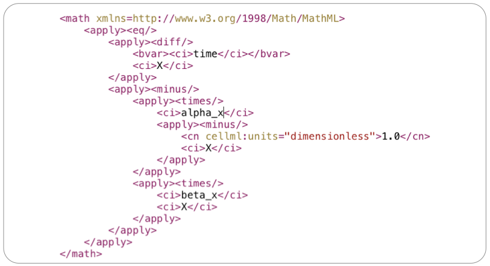
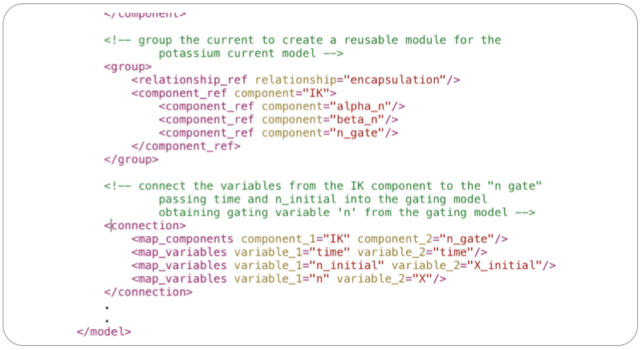

Hodgkin & Huxley (1952) ‘A Quantitative Description of Membrane Current and its Application to Conduction and Excitation in Nerve’, J. Physiol. 117: 500-544.
The Hodgkin & Huxley (1952) (HH) model is one of the foundational models of cellular electrophysiology. It defined the “standard” gating kinetics still used in many models today! The model includes potassium, sodium, and ‘leakage’ currents as well and the transmembrane electrical potential. The HH model was originally developed to investigate flow of electric charge in giant nerve axons in squid, but has been applied to a wide range of physiology over the years. The image below shows a graphical view of the elements described in the HH model.
This example follows the material prepared for the VPH-MIP standardisation and ontologies module.
When encoding a model into CellML it is important to first get a good overview of the mathematical equations in the model. A summary for the HH model is shown below. For this model, it is fairly easy to get a good idea of the model structure and begin thinking about how to encode the model in CellML. But this is not always the case, particularly for modern models consisting of many tens of state variables - so often you will need to iterate when developing the CellML encoding of a model. Another reason why it is good practice to make use of a good version control system :)
CellML divides the mathematical model into distinct components, which are able to be re-used. So we want to divide the mathematical model into meaningful blocks (CellML component). In the HH model, these would be:
CellML uses MathML (http://www.w3.org/Math) to encode the mathematical equations in a model. Specifically, CellML 1.0 and CellML 1.1 use MathML 2.0. Using MathML, the equation:
would be encoded in MathML like this:

which you can see in the CellML model: gating-variable.xml; in the hh_gating_variable component.
The equations encoded in MathML define the relationships between variable's in the CellML model. All variables in CellML must be defined, and must be assigned units, with some examples shown below.
In the above example:
X_initial defines the initial value for the state variable X (initial_value="X_initial")public_interface="in" means the variable will be defined elsewhere in the modelpublic_interface="out" means the variable will be available for use elsewhere in the modelThe mathematics and associated variables are grouped into CellML components, which form the reusable building blocks for a model. Continuing the gating variable example above, the skeleton component is shown below. Component's themselves are just a named container that groups the variable definitions with the mathematical expressions in which they are used.
The model, in this case, simply provides the wrapper around the component where we import standard unit definitions for use in the variable declarations and math and then define the component. Note the units dimensionless are defined in the CellML standard and therefore do not need to be defined in the model, we just need to define the "non-standard" units that we want to use.
Everything in the model can, and should, be annotated using RDF/XML – left out here for brevity.
The actual HH gating variable model can be found here: gating-variable.xml.
We now have a generic HH gating variable model, so we can instantiate specific instances for the sodium and potassium currents in the HH model. Here we demonstrate the example of the potassium current. Sodium is the same but repeated twice for the m and h gates. (Math is just there for example, does need to be MathML not infix like this.)
Creating encapsulation groups allows modellers to create abstract entities for later re-use. Importing the parent of the encapsulation group will also import the child components, so later on when the potassium current component is imported you also get the n-gate and gating rate kinetics (alpha_n and beta_n) defined.
The variables in the model need to be connected between components (following the *_interface attributes described earlier). These connections are treated as mathematical equalities with automatic unit conversion. In the snippet here, we need to pass the time and initial value for the gating variable ‘n’ into the gating model and the gating model will return the gating variable ‘n’. Not shown, but we would also need similar connections to connect the gating rate kinetic parameter models to obtain the alpha_n and beta_n values for the given membrane potential, temperature, etc…

Here we describe the complete mathematical model encoded in CellML, available as the stimulated.xml. As normal, first we import the required units. Then we import instances of each of the current components.
Then we define an “action potential” component which we will use to define the membrane potential with an applied electrical stimulus. This component will define the “interface” presented to users of this model encoding. It is important to note the public and private interfaces for these variable declarations. public_interface=in means we expect the variable to be defined outside this model (c.f., inputs); public_interface=out means we are making that variable available to users of this model (c.f. outputs); and the private interfaces are used to define the connections to the internal child components of this model.
Following best practices, this model separates the mathematics from the parameterisation of the model, so generally we will expect this mathematical model to be imported into a specific parameterised instance in order to perform numerical simulations. The parameterisation would include defining the stimulus protocol to be applied. Similarly, this model may be used in larger scale models, e.g., tissue electrical activation, which might make use of the output variables (current and membrane potential) in further computational models.
The block of math in the action potential component defines the differential equation governing the membrane potential, which is just the sum of the transmembrane currents we imported earlier, and an applied stimulus current as described above.
We also define an encapsulation group such that the action_potential component can be re-used in further models. For example, as described above, we expect this model to be imported into a specific parameterisation of the mathematical model.
As described for the gating variable model previously, we need to connect the variables defined in the action_potential component to the other components in the model (imported above). In order to allow the separation of mathematical model from parameterisation, we need to ensure required parameters are defined all the way up the encapsulation and import hierarchy.
The model above (stimulated.xml) defines the mathematical model. In order to perform a simulation, we need to parameterise the model as required for the particular simulation purpose. Here we look at the case when a periodic electrical stimulus current is applied to the model. The CellML model is given at experiments/periodic-stimulus.xml and the corresponding SED-ML document is sed-ml/periodic-stimulus.xml. Results from performing this simulation experiment are shown below, the experiment was executed using the SED-ML Web Tools.
You are able to reproduce these simulation results using the SED-ML web tools. First, you need to save the SED-ML document to your local file system. Then you go to the SED-ML Web Tools site and upload the SED-ML document to the web site (the actual models used are referenced from the CellML model repository, so you don't need to worry about them). Once the document is uploaded, you are able to validate the SED-ML, check the details of the simulation experiment, and perform the actual experiment - which should result in the above graphs.